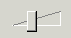

JavaScript Bs_Slider example 2
- Similar to example 1, using different styles.
-
Slider 3 uses fallback code for old browsers.
Screenshot old browser:
Screenshot new browser:

Just put your fallback code inside the div tags. All innerHTML content will be replaced
if the slider renders.